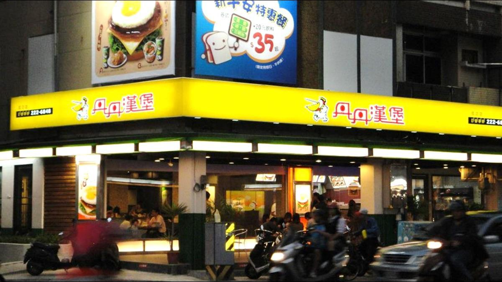

 丹丹漢堡 台灣的一家速食品牌，特色是提供中西合併的餐點。 名列臺灣網路媒體民調「最常去消費速食店」的第二名[2]，被台灣媒體稱作「速食南霸天」。 創始店位於高雄七賢；另一說是由蔡氏人士在高雄五甲開設了第一家丹丹漢堡餐廳，但3年後轉讓給其他經營者。
名列臺灣網路媒體民調「最常去消費速食店」的第二名[2]，被台灣媒體稱作「速食南霸天」。
創始店位於高雄七賢；另一說是由蔡氏人士在高雄五甲開設了第一家丹丹漢堡餐廳，但3年後轉讓給其他經營者。